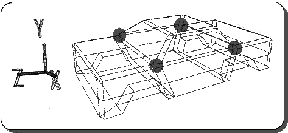
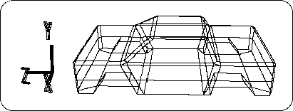

Return to previous page | Return to menu | Go to next page
Polygons that are pentagons or larger cannot be handled by Saturn and must be divided.

First, the (shaded) pentagonal polygon shown in the above figure (Figure 3-58) is divided into a quadrangle and a triangle by drawing edges.
[Mesh] → [Edge] → Left mouse button (Add ONE edge)
Then draw the edge as shown below (Figure 3-59).
